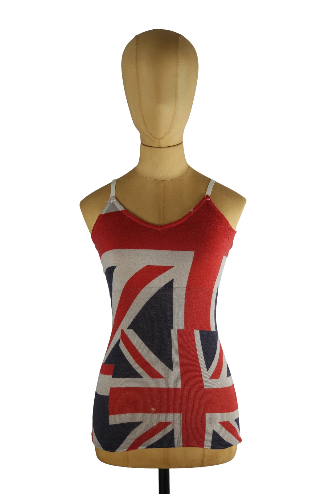

1 / 12Aus dem kuratierten Archiv von Disorder119. Fein gestricktes Trägertop von Comme des Garçons mit ikonischem Union-Jack-Motiv in Rot, Blau und Creme. Dieses Piece stammt aus einer Runway-Kollektion des Hauses und verkörpert die experimentelle, konzeptuelle Ästhetik, für die Comme des Garçons international bekannt ist. Das enganliegende, körpernahe Design folgt klar der Silhouette und wirkt trotz des grafisch starken Prints ruhig und reduziert. Die schmalen Träger und der leicht geschwungene Ausschnitt unterstreichen den femininen Charakter, während das Motiv eine deutliche Referenz an britische Symbolik und frühe Avantgarde-Laufstegarbeiten setzt. Ein prägnantes Sammlerstück mit klarer Modehistorie. Details: Marke: Comme des Garçons Farbe: Rot / Blau / Creme Größe: S Passform: Körpernah Verschluss: Kein Verschluss Material: Gestricktes Textil Herstellungsland: Nicht angegeben Fotografie & Passform: Das Kleidungsstück wurde auf unserer Standard-Schneiderpuppe fotografiert, die wir zur konsistenten Darstellung aller Kleidungsstücke verwenden. Maße der Schneiderpuppe: Brustumfang 89 cm Taillenumfang 66 cm Hüftumfang 89 cm Schulterbreite 38 cm Zustand: Gebrauchter Zustand. Zwei kleine Löcher im Frontbereich des Materials sind vorhanden und auf den Detailaufnahmen sichtbar. Weitere alters- und nutzungsbedingte Gebrauchsspuren. Rechtliche Hinweise: Verkauf als gebrauchtes Kleidungsstück. Die Beschreibung erfolgt nach bestem Wissen und Gewissen. Farbnuancen und Oberflächenwirkungen können aufgrund von Lichtverhältnissen bei der Fotografie sowie unterschiedlicher Bildschirmdarstellungen leicht vom Original abweichen. Disorder119 steht für sorgfältig kuratierte Designerstücke mit Fokus auf Authentizität, Qualität und zeitlose Relevanz.
Shop-Kontakt noch nicht eingerichtet: WhatsApp-Nummer oder E-Mail-Adresse fehlen in SHOP_CONFIG (index.html).
Disorder119 · Kuratiertes Archiv für Designer-, Vintage- und Contemporary-Mode. Jedes Stück wird einzeln ausgewählt, fotografiert und beschrieben.